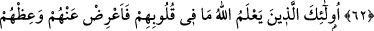

MÜNÂFIKLAR
60- Sana indirilene ve senden önce indirilenlere inandıklarını ileri sürenleri
görmedin mi? Tâğut’u inkâr etmeleri emrolunduğu halde hakem olarak ona
başvurmak istiyorlar. Şeytan da onları büsbütün saptırmak istiyor.
61- Onlara: Allah’ın indirdiğine (Kitab’a) ve Rasûl’e gelin (onlara başvuralım),
denildiği zaman, münâfıkların senden iyice uzaklaştıklarını görürsün.
62- Nasıl elleriyle yaptıkları yüzünden başlarına bir felâket gelince hemen, “Biz
yalnızca iyilik etmek ve arayı bulmak istedik” diye yemin ederek sana gelirler!
63- Onlar Allah’ın, kalplerindekini bildiği kimselerdir; onlara aldırma, kendilerine
öğüt ver ve onlara, kendileri hakkında tesirli söz söyle.
“Sana indirilene” Kur’ân-ı Kerim’e “ve senden önce indirilenlere” Tevrat ve diğer
indirilen kitaplara “inandıklarını ileri sürenleri görmedin mi?” Burada “ileri sürmek”
yani zu’mdan maksat, yalan iddiâdır. Çünkü âyet münâfıklar hakkında nâzil olmuştur.
Sanki “Onlar ne yapıyor?” diye sorulmuş, cevap olarak şöyle buyurulmuştur: “Tâğut’u
inkâr etmeleri” uzak durmaları “emrolunduğu halde hakem olarak ona başvurmak
istiyorlar.”
İbn Abbas (r.anhümâ)’dan rivâyet edildiğine göre bir münâfık bir yahûdî ile
anlaşmazlığa düştü. Yahûdî, münâfığı adâletle hükmettiği ve rüşvete meyletmediği için
Hz. Peygamber (a.s)’ın hakemliğine, münâfık ise yâhûdîyi rüşvet almaya çok meyyal
olduğu için Ka’b b. Eşref’in hakemliğine dâvet etti. Yâhûdî haklı, münâfık ise haksızdı.
Netîcede yahûdî teklîfinde ısrar etti ve Rasûlullah (s.a.v)’in hakemliğine başvurdular. O
da yahûdînin lehine hükmetti.
Münâfık onun hükmüne râzı olmadı ve “Bir de Ömer’in hakemliğine başvuralım”
dedi. Ömer’in yanına geldikleri zaman, yahûdî Hz. Ömer’e: “Muhammed benim lehime